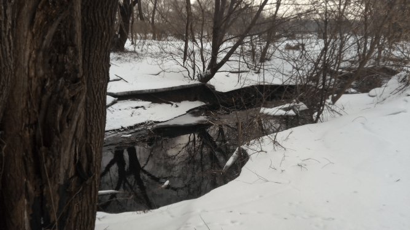

The river begins to freeze when the cooler comes Her vapours send us a farewell message Like saying you'll not see me Till the warmer's return Till springs Till waves Till birds Till leaves' gay rustle.
Trees are the hands of the earth, Stretched out to the sky in a silent prayer: Brother sky, protect your sister earth From these two-legged creatures.
The winter whines about the sky Sending not the snow but the rain The drops like corpses of snowflakes Dangling from pines haughty and vain.
Willows are the heralds of spring Standing before us With the heralding flowers White as snow.
As spring comes I move To a small summer-house Where my friend spider Spins his web of time While my silly machine Dreams of computing How long it is.
Among the total grey, There was a day of happiness In life of a prickly creature.
There over my head was gathered an ice cap of sufferings to be melted with all the warmth I have in my heart
All photos are at
Flickr
.